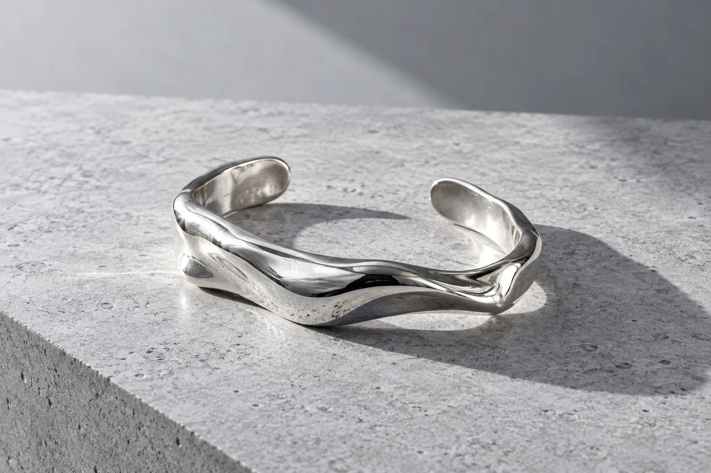
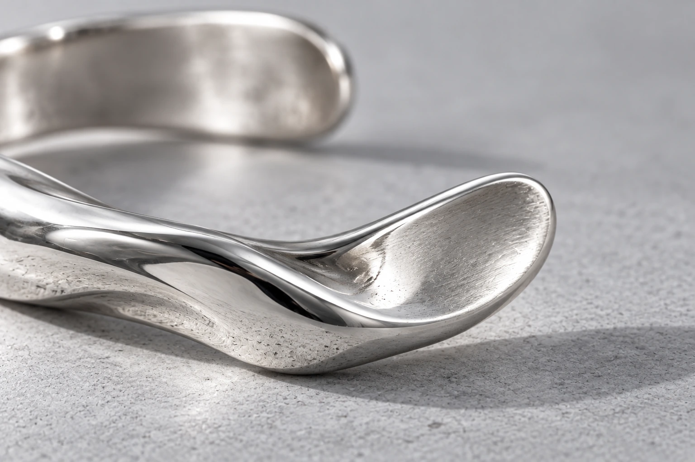

SOFIA BRANDT / OBJEKT № 01Die
Die
offene
Form.
Manchmal macht
der Zwischenraum das Ganze.

FOTOGRAFISCHE MATERIALSTUDIEOFFENE KONTUR
FREIER DIGITALER ENTWURFZiehen, um Licht über die Form zu führen.
01 / EINE GESTE WIRD FORMEine Linie.
Eine Linie.
Eine Öffnung.
Ein eigener Charakter.
Die Kontur bleibt bewusst ungeschlossen. Eine leichte Verdrehung gibt ihr Spannung; die abgeflachten Flächen fangen das Licht unterschiedlich auf.
Die polierte Oberfläche zeichnet die Umgebung in klaren Lichtkanten nach.

DER MASSSTAB DER NÄHEDas Detail
Das Detail
verändert
den Blick.
Im Kleinen wird sichtbar, was eine Form ausmacht: eine Kante, eine Spannung, ein Übergang. Das digitale Objekt und die freie Materialfotografie untersuchen zwei Seiten dieser Idee.
DIE PERSON DAHINTER
Sofia Brandt
Ich arbeite mit dem,
was eine Form offenlässt.
Schmuck begleitet eine Bewegung und einen Menschen. Mich interessieren klare Konturen, angenehme Proportionen und Oberflächen, die mit dem Licht leben.